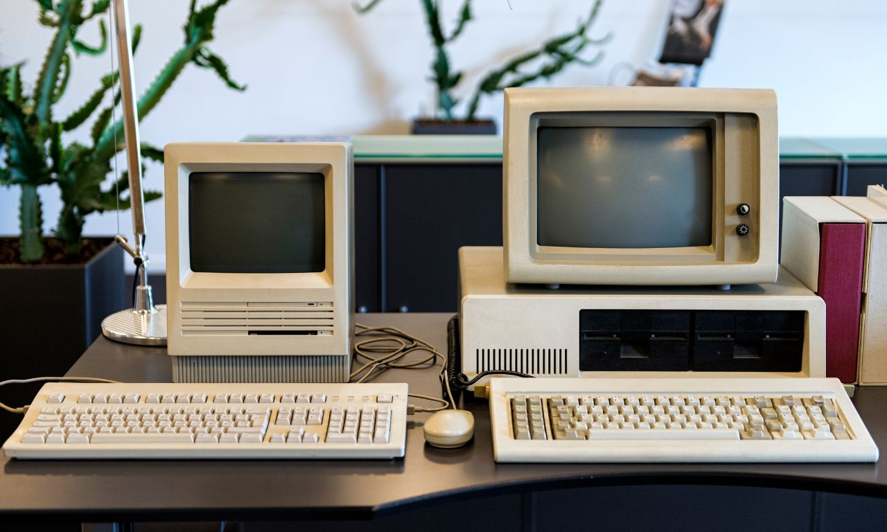
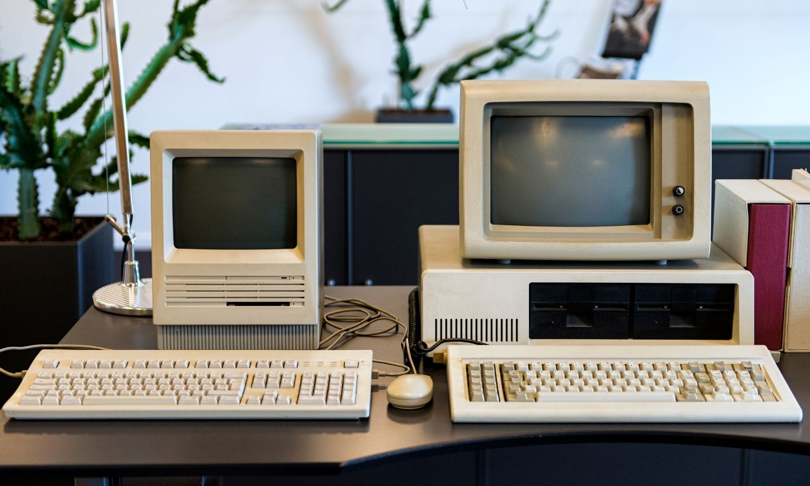
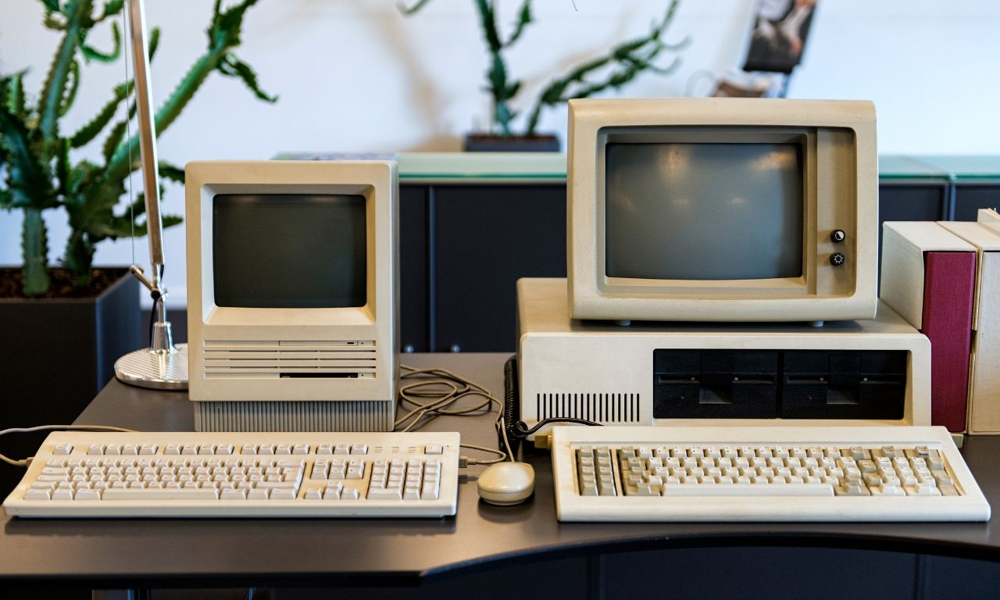
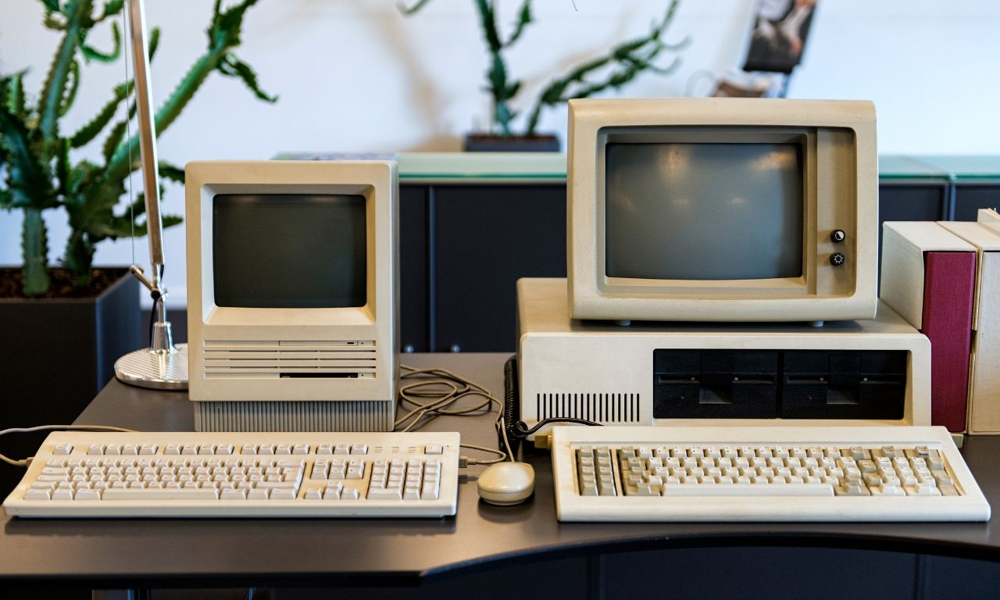
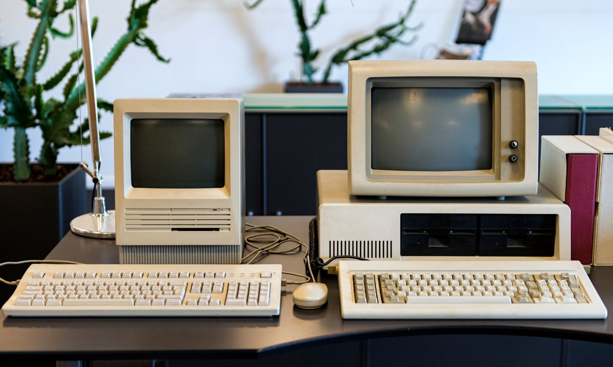

Museo de Computadoras UNSXX
Inicio
Objetos del Museo
Mas Informacion
El Museo de Computadoras esta ubicado en el la planta baja del Bloque B.
Objetos del Museo
Descubre Todo lo que se utilizaba antes, en el area de la Informatica

 


 
